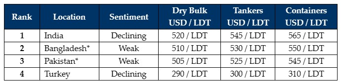

inWeekly Demolition Reports23/10/2023

This week, all of the major recycling markets seemed to be deteriorating at the same time assteel plate prices in India declined for a second straight week, further deteriorating Indian sentiments and making Alang Buyers increasingly hesitant to offer firm once again.
Additionally, as the Israeli conflict rages on in the region, not only are economic pundits predicting oil prices to rise in the near future, but it is also seeming to affect the forex value of recycling nation currencies as other than the Indian Rupee, all of the other currencies noted a simultaneous devaluing against the U.S. Dollar this week.
Ongoing difficulties in obtaining the relevant financing / L/C approvals also continues to pose a significant problem for recyclers in both Pakistan & Bangladesh and this has led to a minimal number of vessels being concluded into both markets over the past several weeks. With India leading the way during this time, several container units were concluded into Alang at fantastic prices (one even breaching the magical USD 600/LDT mark) as a result.
Meanwhile, many in the industry believe prices may have peaked and much of the chatter at the Tradewinds Ship Recycling Conference in Singapore last week, circled around prices and sentiments cooling down towards the end of the year, especially as some of the frantic buying seemingly concludes and the expected Diwali price cooling starts to loom larger.
Finally, Turkey also slips again this week as the Lira finally breaches past TRY 28, and on the back of slipping plate prices (both import and local steel), Turkish levels were seen slipping by about USD 10/MT themselves, dipping Aliaga below USD 300/MT for dry units.
Accordingly, it is unlikely to be the busy conclusion to 2023 that many were anticipating (especially based on recent sentiments) and expectations are that the next sales will likely take place at similar (if lucky) or (most likely) lower levels. An empty sale chart also suggests that a pickup in Dry Bulk and Container charter rates will likely keep vessels away from the beaches a little longer. However, this is only delaying the inevitable, of what is expected to be a busy 2024 (at the very minimum) for ship recycling.
For week 42 of 2023, GMS demo rankings / pricing for the week are as below.

📄 Download PDF: Ship-recycling-market-insight-week-42-2023-Momentum-Stalls.pdfSource: GMS,Inc. ,https://www.gmsinc.net/gms_new/index.php/web